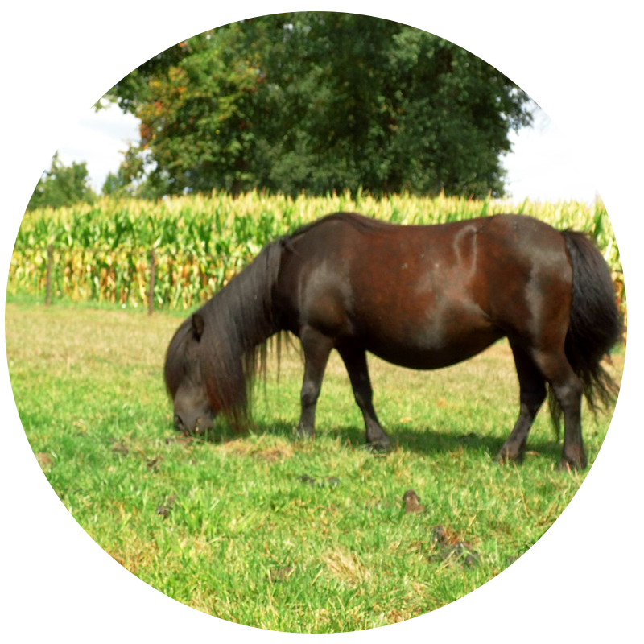
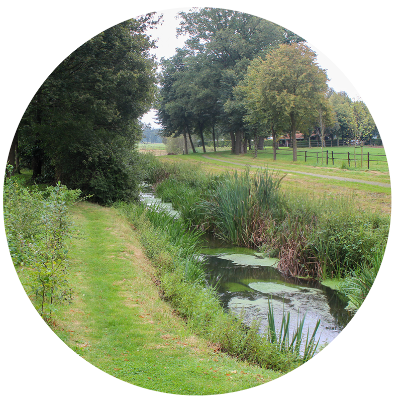
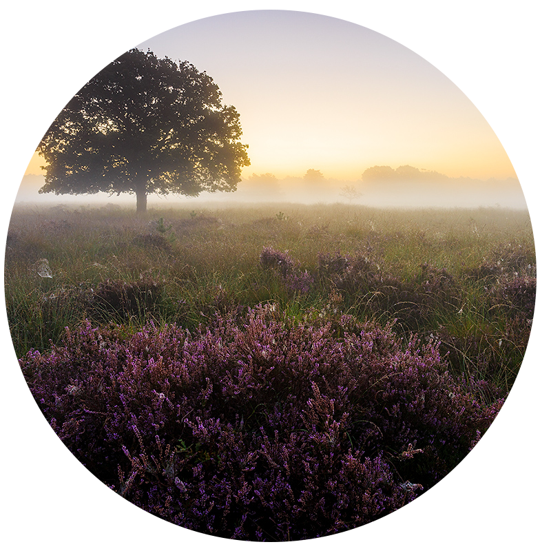
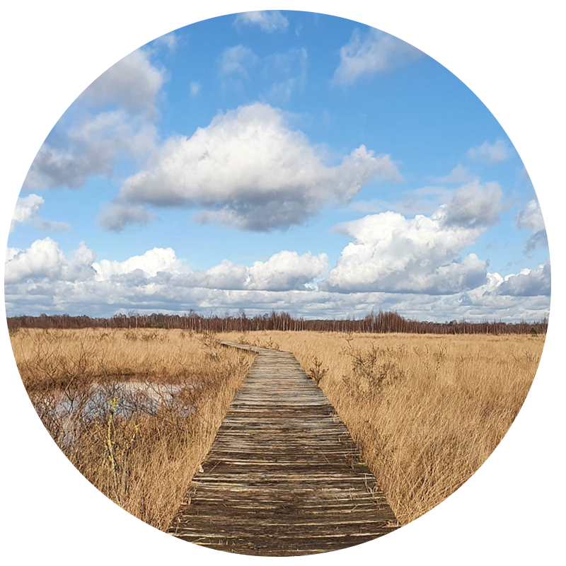

Achterhoek/Twente
Camping Koordes is gelegen in Rekken, in de Achterhoek, niet ver van de grens met Duitsland.
In het nabijgelegen Eibergen zijn tal van supermarkten en winkels voor de dagelijkse boodschappen. Enschede ligt op circa 20 km afstand.
Er zijn prachtige gebieden waar u kunt fietsen of wandelen, zoals het Zwillbrocker Venn, het Haaksbergerveen en het Buurserzand.
Niet ver van de camping bevindt zich één van de startpunten van het klompenpad, een wandelroute van 11,27 kilometer die gemiddeld ongeveer 2 uur en 15 minuten duurt. Deze route neemt u mee over onverharde oude smokkelpaden door het uitgestrekte buitengebied van Rekken.




